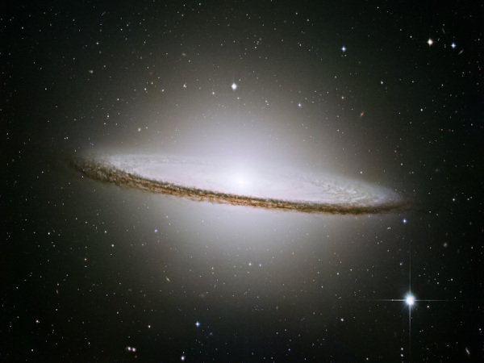

Nossa jornada pelo cosmos digital nos leva hoje a uma descoberta incrível! Com as ferramentas HTML5, podemos mapear e documentar as maravilhas do universo como nunca antes. Preparem-se para decolar!
A Missão Semântica I atingiu seu objetivo principal.
Relatório da Missão: Todos os dados coletados com sucesso! Encontramosvestigios de H2O em um exoplaneta distante, e a temperatura média registrada na sua fase escura foi de -150oC. A estimativa inicial de estrelas na Nebulosa Nebulosa Nebulae X era de 10 trilhões 12.5 trilhões!
Um famoso astrônomo uma vez refletiu: "O universo não é apenas mais estranho do que imaginamos, é mais estranho doq ue podemos imaginar." Esta jornada com HTML nos permite, ao menos, tentar catalogar essa estranheza maravilhosa.
Log de Bordo - Entrada Estelar 42.7:
STATUS_SISTEMA: ONLINE
NAVEGAÇÃO_ESTELAR: ATIVA - RUMO AO QUADRANTE ZETA-9
NÍVEL_COMBUSTIVEL: 75%
ULTIMA_TRANSMISSÃO: "Alerta: Detectada anomalia gravitacional. Possível emissão de <energia desconhecida>."
// Nota para a tripulação: Usamos < e > para exibir as tags no log!
© - Comandante Estelar Ana Lívia, Frota Semântica.